Determining revision and new section
I wrote down all of the details that I want to revise in my data story. Please download the pdf to see all the comments in Acrobat, since the browser version doesn't show the comment replies.
To figure out what section I should add, I first listed out all the sections that my data story has so far. I find that my data story is more focused on the production and envrionmental aspects of rice, and lacks the cultural aspect, which is something that I can talk about.

After the 1-on-1 meeting in week 2 do I realize that the transition between each section of the story isn't really smooth. Hence I decided to reorder the sections first, and then for sections that I can't figure out how to transition, I will add a new section to help bridge it.
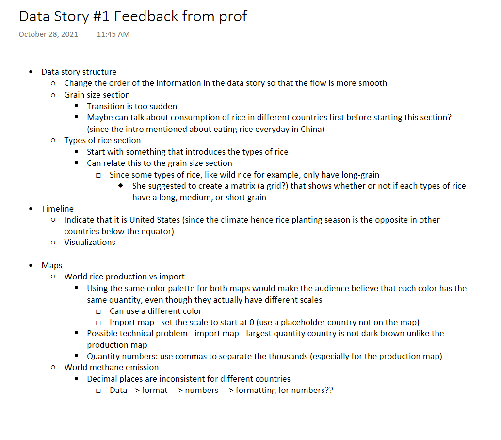Due to the time constraints, I don't think I will be able to revise everything, hence I made a list of what I should prioritize.
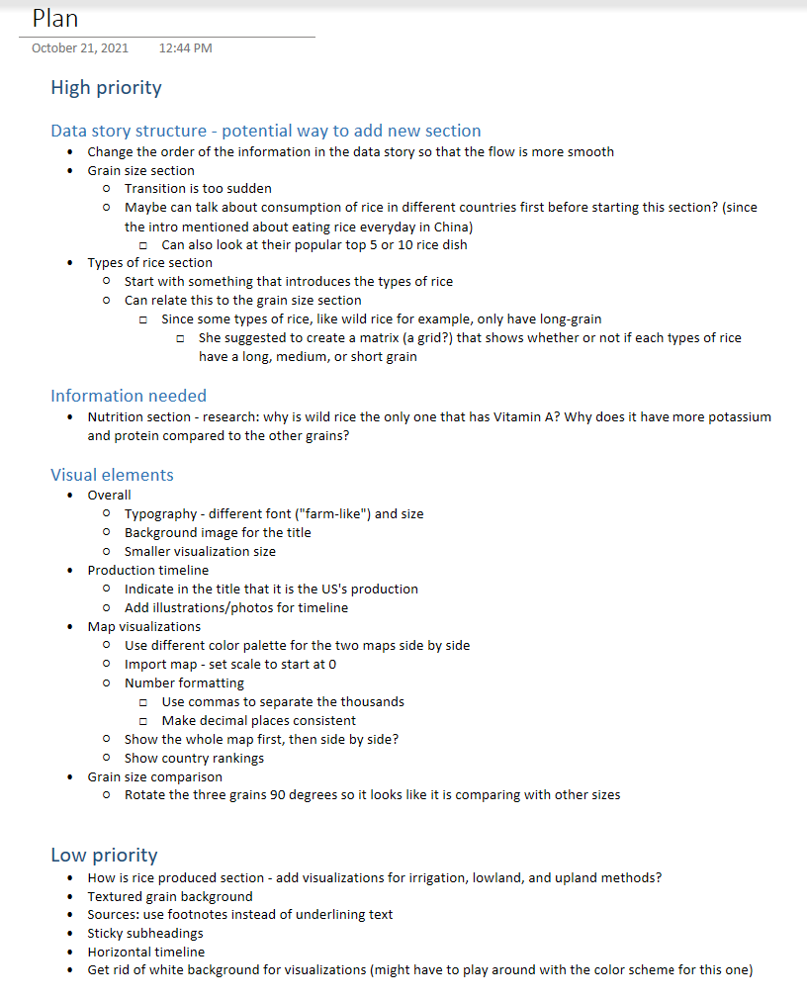Timeline Redesign
I redesign the timeline because I think having the whole timeline fit on the broswer window would allow the viewer to understand the time span even better. In the original (verticle) timeline, the steps like step 2 (irrigation & growing) and step 3 (harvest) are cropped.
 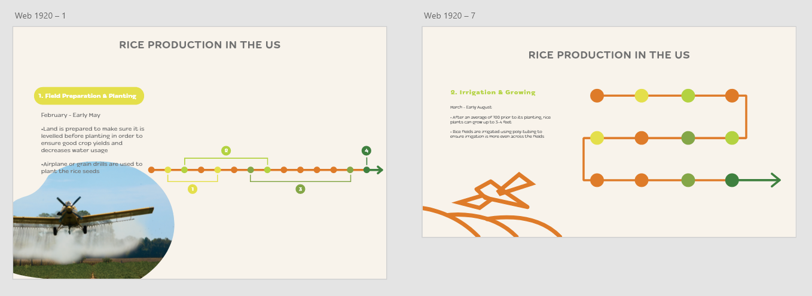
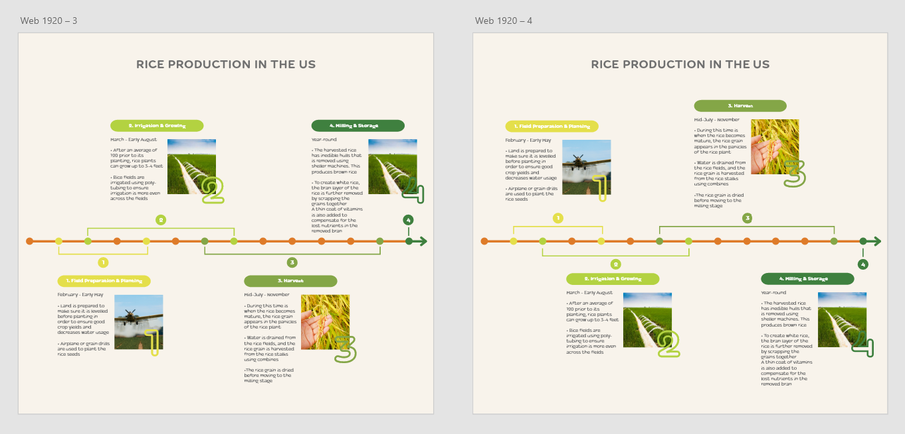
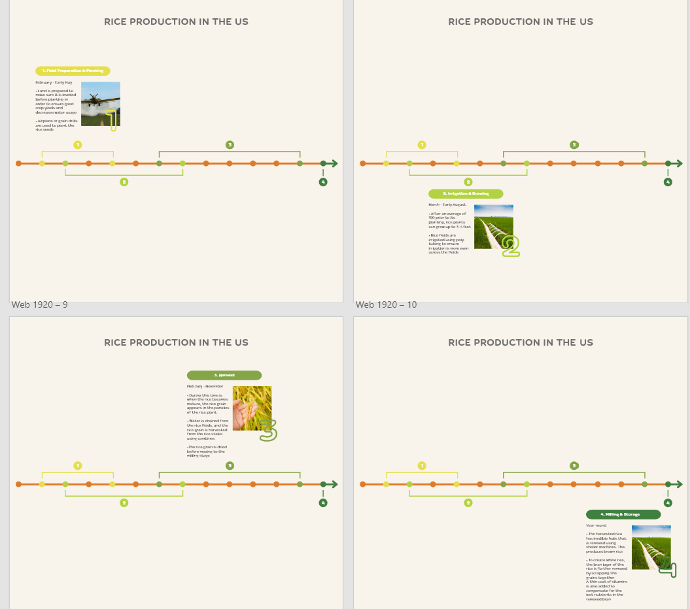
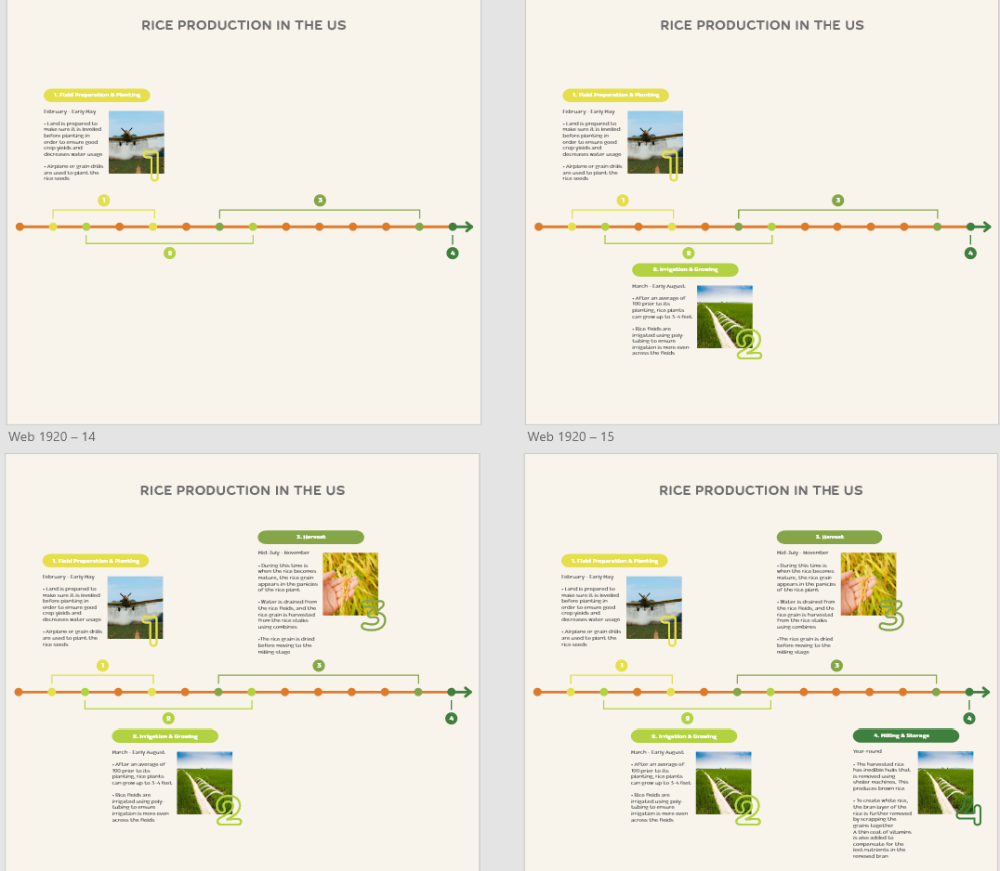
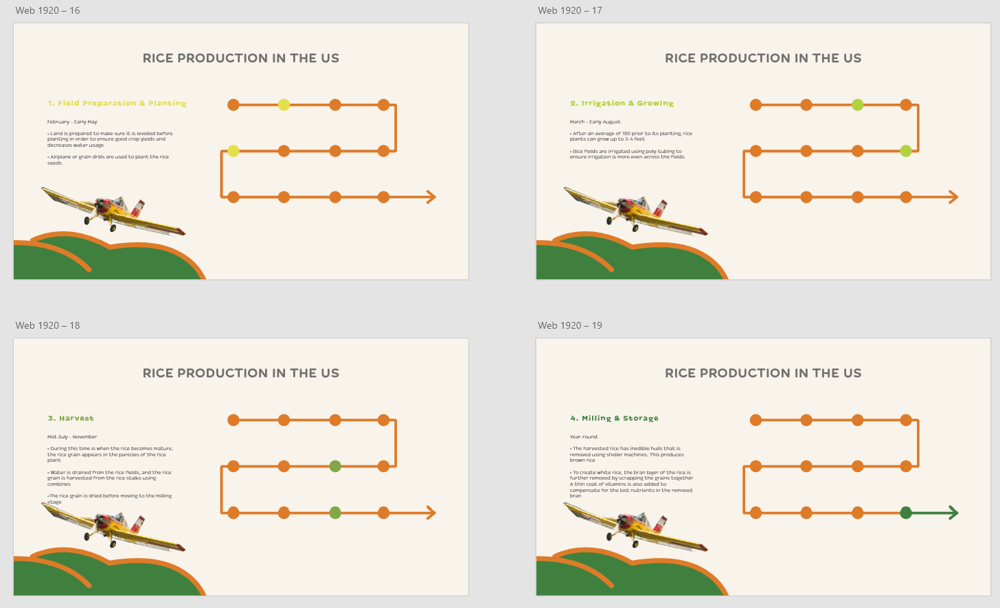
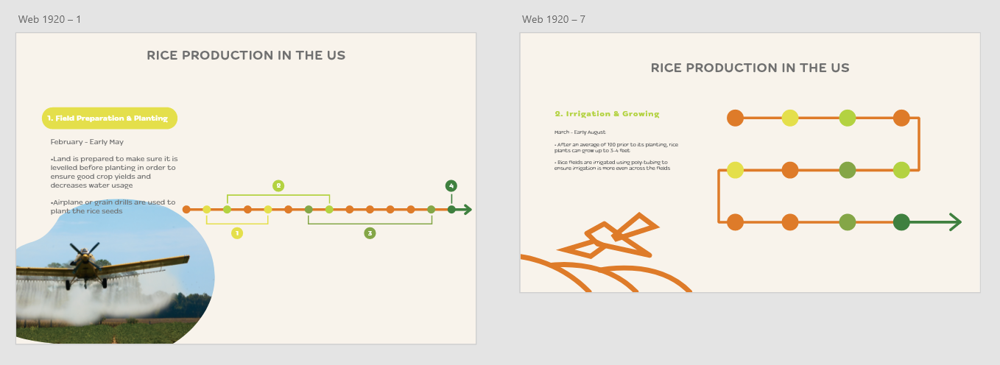
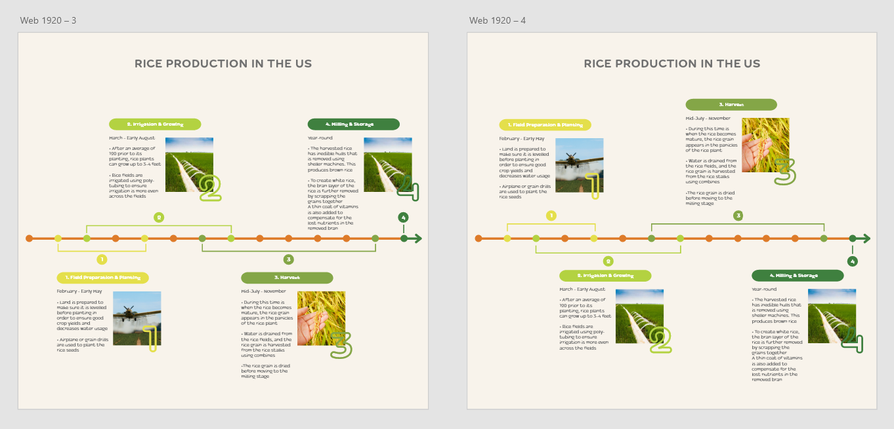
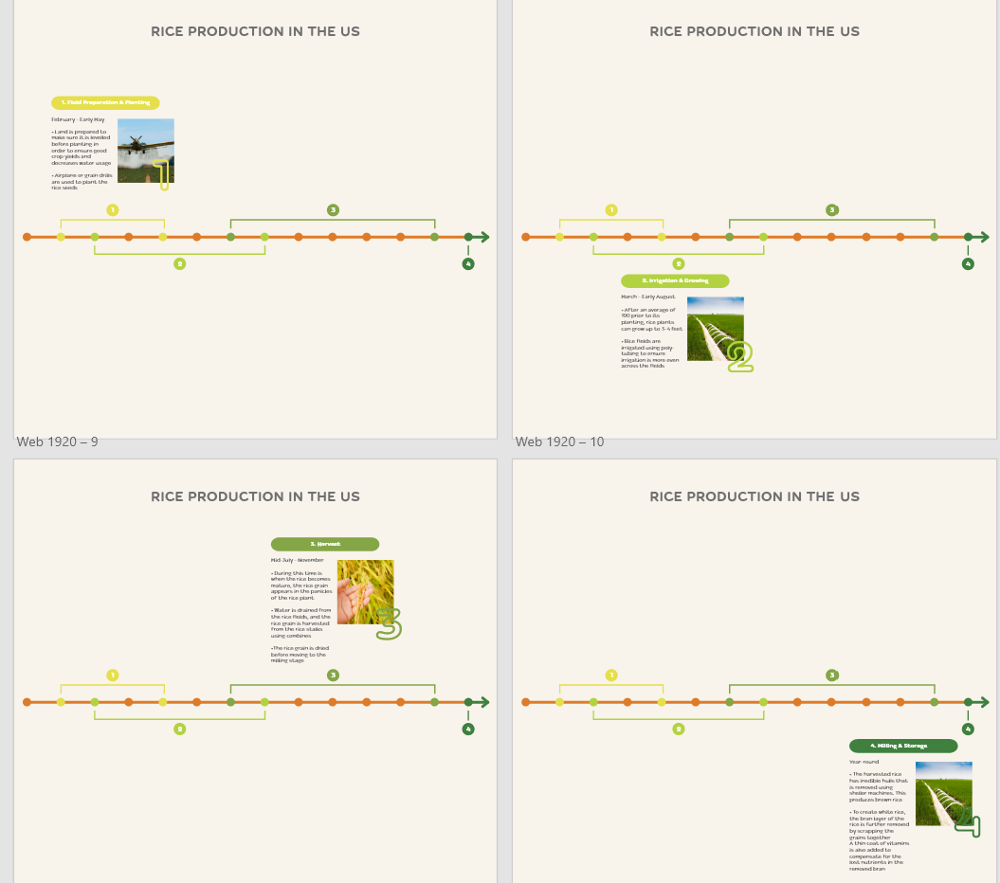
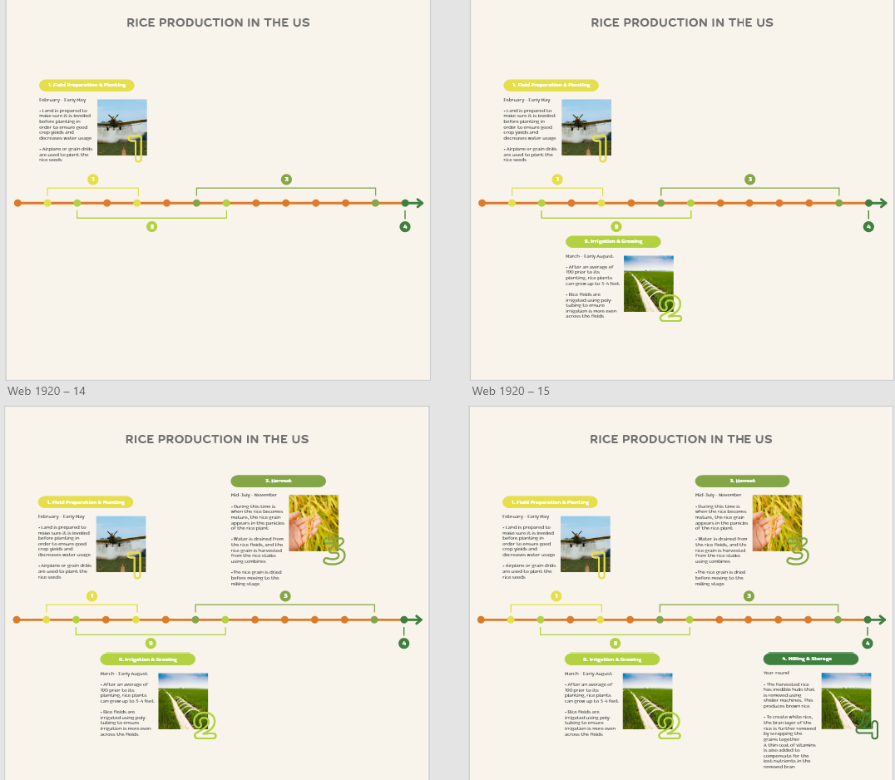
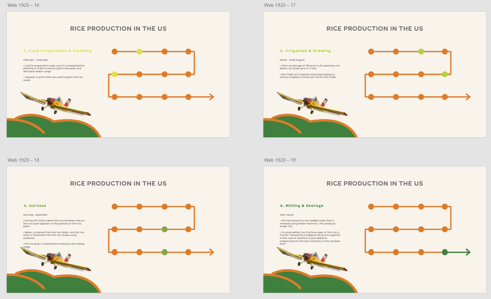
View the final version here